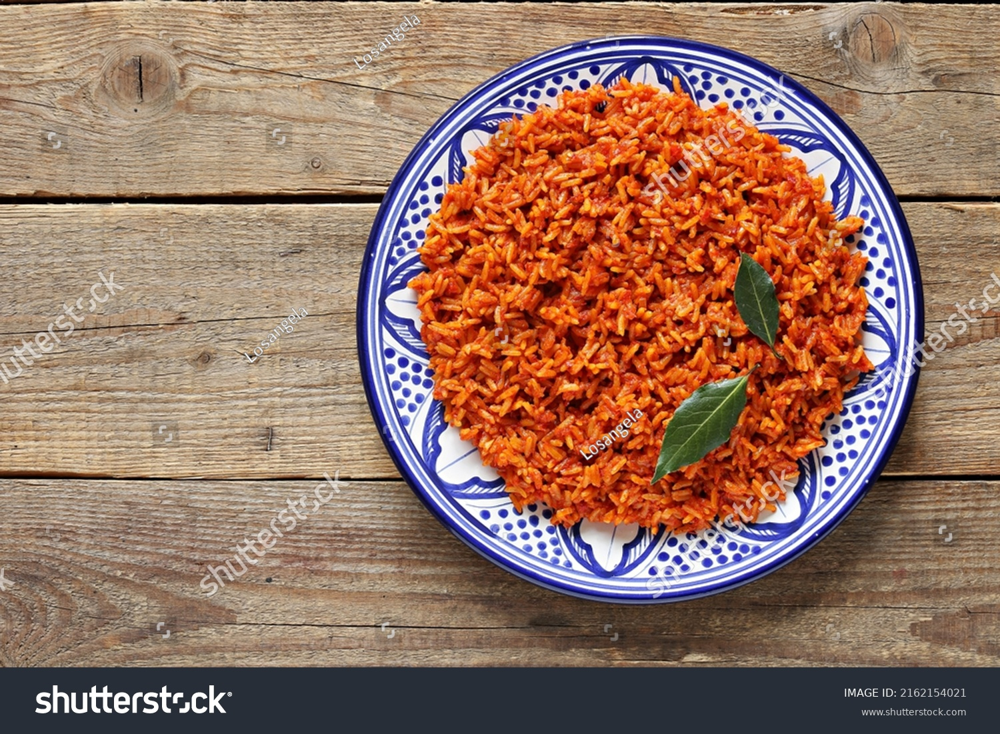

Jollof Rice

Image of the jollof rice
This is a recipe of my favourite nigerian dish called jollof rice.
Jollof rice is a beloved dish in many countries across West Africa and each one has its own unique version
Ingredients
- TOMATOES
- RICE
- RED PEPPER
- CHILLI PEPPER
- SCOTCH BONNET
- ONIONS
- RED OIL
Steps for cooking
- Bring to a boil, then turn down to low heat and cook for 20 minutes without removing the lid.
- Turn off the heat after 20 minutes, DO NOT REMOVE THE LID; you need the steam for it to continue cooking the rice for another 20 minutes
- After the full cooking time, remove the lid and use a fork to fluff up the jollof rice. There will be a layer of rice stuck to the bottom of the pan. This is due to the cooking time with direct heat on the bottom with the natural sugars from the tomato base.
- Enjoy a flavorful dish of jollof rice with the perfect complement: tender cooked vegetables or sweet fried plantains. Boiled eggs are another favourite.